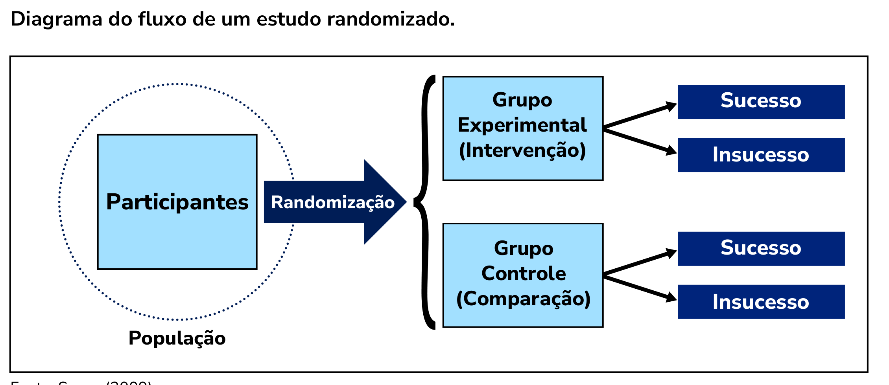
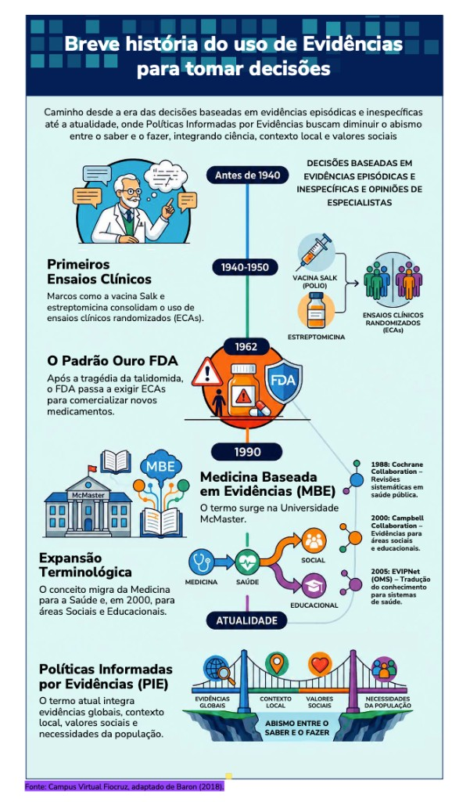

Módulo 1 | Aula 2
Contextualização Histórica: a EVIPNet no Mundo e no Brasil
Contextualização Histórica do Uso de Evidências
Como visto na primeira aula, no contexto das PIE, evidências científicas se constituem no conhecimento produzido a partir de pesquisas, de dados e do emprego de regras e procedimentos identificados com o método científico, conhecidos e compartilhados pela comunidade.
Baron (2018) nos conta que, por muito tempo na era moderna, o uso de pesquisa científica rigorosa não foi necessário para comprovar progressos expressivos nas condições de vida e saúde como decorrentes de medidas específicas.
São bons exemplos o uso da penicilina como tratamento para infecções bacterianas, da insulina no tratamento da diabetes, medidas de saneamento básico e refrigeração de alimentos perecíveis. Seus efeitos eram tão expressivos e evidentes que podiam ser detectados com métodos não muito rigorosos, como a simples observação de pessoas antes e depois da intervenção. O mesmo ocorreu em outras áreas de políticas.
Entretanto, com o passar do tempo, muitos países já haviam adotado massivamente os tipos de intervenção que produzem esses efeitos tão contundentes. Para continuar progredindo, passou a ser necessário o uso de métodos de avaliação para detectar efeitos mais modestos, mas ainda assim importantes. Por exemplo, 10% de crescimento na taxa de sobrevida para um tratamento médico ou 20% de redução na evasão escolar, para uma intervenção na área de educação (Baron, 2018).
Assim, passou a ser necessário o uso de métodos mais rigorosos, como estudos randomizados controlados, tanto para avaliar a magnitude dos resultados alcançados, como para identificar se esses eram decorrentes das medidas testadas ou de outros fatores denominados fatores de confusão. Nas décadas de 1940 e 1950 foram publicados os primeiros ensaios clínicos randomizados sobre o uso de estreptomicina para tratamento da tuberculose e sobre a eficácia da vacina Salk para prevenção da poliomielite, respectivamente na Inglaterra e nos Estados Unidos. Esses estudos representaram uma expressiva contribuição para a Saúde Pública e o uso de ensaios randomizados controlados foi paulatinamente se ampliando (Baron, 2018).

Fonte: Souza (2009).
No início da década de 1990, a tendência de usar evidências científicas como base para decisões na medicina levou à configuração do termo Medicina Baseada em Evidências (MBE). Essa tendência, que inicialmente se aplicava à tomada de decisões por médicos, se estendeu para outros atores, como usuários e profissionais de saúde, tendo sido chamada de “Saúde Baseada em Evidências, referindo-se à aplicação de evidências no âmbito do tratamento individual de pacientes.
Posteriormente, a abordagem se estendeu também para o contexto de gestão e formulação de políticas, quando passou a receber denominações como “Políticas Baseadas em Evidências” e “Políticas Fundamentadas em Evidências”.
Se quiser saber mais sobre esse tema, uma breve história da política baseada em evidências é encontrada em Baron (Baron, 2018). Além disso, uma análise crítica do “Movimento das Políticas Públicas Baseadas em Evidências” é desenvolvida em Faria (2022).
Tanto a MBE quanto a elaboração de políticas com base em evidências receberam críticas por presumir que a assistência em saúde ou as decisões sobre as políticas deveriam ser determinadas exclusivamente a partir de evidências científicas. É evidente que o desenvolvimento de políticas também requer evidências, mas nem as decisões sobre pacientes individuais nem as decisões sobre políticas são determinadas apenas por evidências científicas (Oxman et al., 2009), porque precisam levar em conta também outras informações sobre os contextos social, político, cultural e econômico.
Nos últimos tempos, o termo “Políticas Informadas por Evidências” ganhou destaque, particularmente nas políticas de saúde por refletir uma abordagem mais abrangente, que vai além dos resultados da pesquisa puramente científica. Embora esses resultados sejam fundamentais, confiar apenas neles para decisões políticas pode levar a ignorar a complexidade da realidade. Uma política eficaz deve ser “informada por evidências” porque precisa considerar uma gama mais ampla de fatores, que incluem:
- Recursos disponíveis.
- Necessidades e prioridades da comunidade.
- Valor percebido.
- Tempo e considerações culturais.
- Viabilidade.
- Contexto social, político, cultural e econômico das questões.
Em resumo, o termo “Políticas Baseadas em Evidências” (PBE) implica uma derivação direta da pesquisa, enquanto PIE sugere que a evidência científica é uma contribuição crítica que pode e deve ser levada em conta, entre outras considerações práticas, sociais e políticas que moldam as decisões políticas.
Para um panorama sobre como a pesquisa pode informar políticas públicas, é útil a leitura do texto de Pomeroy e Sanfilippo (2015). Clique aqui e acesse o conteúdo.
Atualmente, organizações como a Organização Mundial da Saúde (OMS), por meio da EVIPNet, visam promover uma abordagem sistêmica para melhor vincular políticas e pesquisas, particularmente em países em desenvolvimento, enfatizando o aspecto “informado”.
